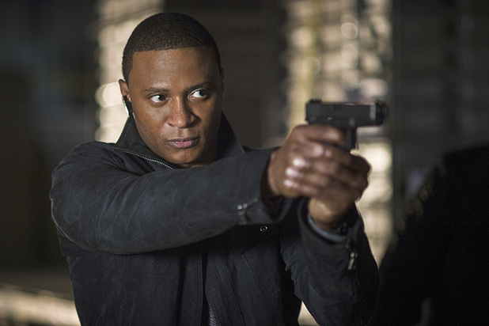

- home
- Oliver Queen/Arrow
- John Diggle
- Felicity Smoak
- Arsenal and Canary
John Diggle

John "Dig" Diggle or "Johnny" to Lyla, is a bodyguard, ex-soldier and a member
of Team Arrow. John is also the older brother of the late Andy Diggle, the
brother-in-law of Carly Diggle, the uncle of A.J. Diggle, the bodyguard,
chauffeur, partner and good friend of Oliver Queen, a good friend of Felicity
Smoak and the late Sara Lance, the husband of Lyla Diggle and the father of Sara
Diggle.
As a member of Oliver's team. John is his partner and plays a number of roles
including field support, decoy and guidance to Oliver in times of doubt. John
has a deep hatred for Floyd Lawton for killing his brother Andy and was on a
mission to find him and kill him, though he later became his uneasy comrade as
members of A.R.G.U.S.'s Suicide Squad. John was known in the squad under the
codename Freelancer.
taken from "http://arrow.wikia.com/wiki/Dig"